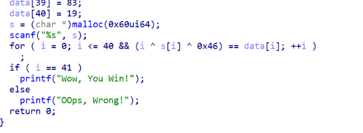
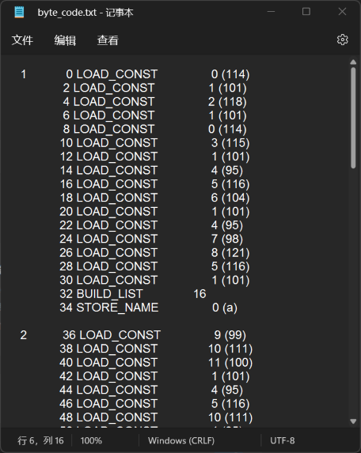
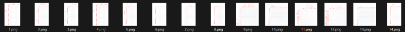
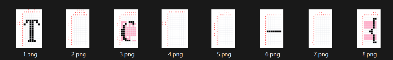
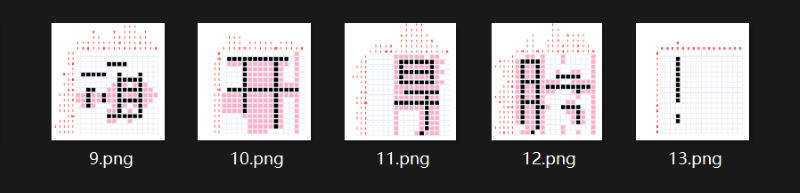
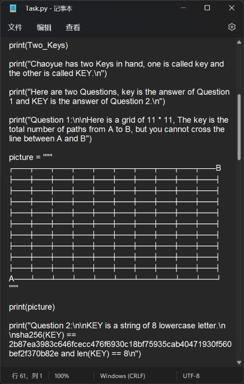
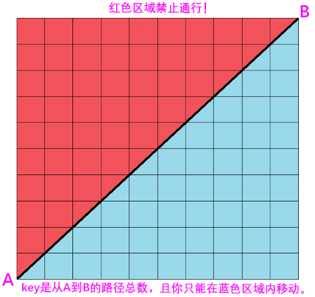
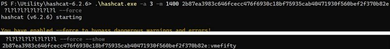

比赛前早早地注册了Octane的比赛ID，但比赛开始时居然忘了密码，于是只能临时注册了一个Nonane的ID来打orz
最后拿了个总榜第十一，领到了奖品。同时也学到了很多，看到了自己很多的不足和以后该努力的方向。
这次比赛主要做的是Crypto和MISC。感觉套路题比较少，至少很无脑的套路不多。比赛前做了一些RSA的简单套路，积累了一点解题脚本，本以为能多水两道，但做比赛才发现Crypto出题人把套路全都放在放在第一道题上了（虽然Padding也是套路题，但到比赛结束也还是没整出来orz）。剩下几道完全是数学题，因为智商不够而被薄纱orz
Misc的各种图片隐写和压缩包隐写的题型是一道也没考（之前看了去年的隐写题还有点期待今年的来着）。和编码有关的题还出在了Crypto板块中。虽然说隐写题只是和出题人对电波而已…但感觉Black_Tea才是更电波的啊，没见过这种问题就完全没有头绪，上网搜都不知道该搜什么orz。Misc的游戏题确实挺好玩的，也辛苦游戏制作者了。
比赛题目存档和官方wp：https://github.com/MakeMerakGreatAgain/tsctf-j_2022
Reverse
Baby_xor
签到题,放进IDA里直接F5，可以看到代码。

数组data[ ]中每个元素分别与i和0x46进行异或运算即可得到flag
解题脚本：
data = [......]
for i in range(len(data)):
out.append(chr(i^data[i]^70))
print(''.join(out))
# TSCTF-J{W3lC0M3_2_ReVEr$E^xOr_1s_$O0o_e2}
Byte_code
题目给了一个txt文件，打开后是这样的代码：

上网查了一下，这个是Python的字节码。用python -m dis命令即可将py文件转换为字节码。原来想找一个可以将字节码直接转换回py文件的程序，但代码看起来并没有很长，就干脆直接自己对照着字节码写出python代码，每写一行就编译成字节码和原文件对照。最后还原出来的python脚本是这样的，再运行一下就可以得到flag。
a=[114, 101, 118,101,114,115,101,95,116,104,101,95,98,121,116,101]
b=[99,111,100,101,95,116,111,95,103,101,116,95,102,108,97,103]
e=[80,115,193,24,226,237,202,212,126,46,205,208,215,135,228,199,63,159,117,52,254,247,0,133,163,248,47,115,109,248,236,68]
pos=[9,6,15,10,1,0,11,7,4,12,5,3,8,2,14,13]
d=[335833164, 1155265242, 627920619, 1951749419, 1931742276, 856821608, 489891514, 366025591, 1256805508, 1106091325, 128288025, 234430359, 314915121, 249627427, 207058976, 1573143998, 1443233295, 245654538, 1628003955, 220633541, 1412601456, 1029130440, 1556565611, 1644777223, 853364248, 58316711, 734735924, 1745226113, 1441619500, 1426836945, 500084794, 1534413607]
c=a+b
for i in range(31):
print(chr(c[i]), end='')
for i in range(16):# 12
a[i]=a[i]+d[i]^b[pos[i]]
for i in range(16):
b[i]=b[i]^a[pos[i]]
c=a+b
for i in range(32):
c[i]=c[i]*d[i]%256
c[i]^=e[i]# 18
print(chr(c[i]), end='')
# TSCTF-J{bY7ecoDe_I$_nOT_so_HArd}
Crypto
锟斤拷烫烫烫
查看题目：
烫烫烫锟斤拷/烫烫烫锟斤拷锟斤拷锟斤拷/烫烫烫锟斤拷锟斤拷烫烫烫/烫烫烫锟斤拷锟斤拷烫烫烫/烫烫烫锟斤拷烫烫烫/烫烫烫烫烫烫锟斤拷锟斤拷/烫烫烫锟斤拷锟斤拷/锟斤拷锟斤拷烫烫烫锟斤拷/烫烫烫烫烫烫/锟斤拷烫烫烫烫烫烫烫烫烫/烫烫烫锟斤拷锟斤拷烫烫烫/烫烫烫锟斤拷锟斤拷烫烫烫/烫烫烫烫烫烫锟斤拷烫烫烫/锟斤拷锟斤拷锟斤拷锟斤拷锟斤拷/锟斤拷烫烫烫锟斤拷锟斤拷/锟斤拷锟斤拷烫烫烫锟斤拷/烫烫烫锟斤拷/锟斤拷烫烫烫烫烫烫烫烫烫/锟斤拷锟斤拷烫烫烫/锟斤拷烫烫烫烫烫烫/锟斤拷锟斤拷锟斤拷锟斤拷烫烫烫/烫烫烫烫烫烫锟斤拷锟斤拷/锟斤拷锟斤拷锟斤拷烫烫烫烫烫烫/烫烫烫烫烫烫锟斤拷锟斤拷/烫烫烫烫烫烫/锟斤拷锟斤拷锟斤拷烫烫烫/锟斤拷烫烫烫烫烫烫/烫烫烫烫烫烫锟斤拷/烫烫烫锟斤拷烫烫烫/锟斤拷锟斤拷锟斤拷锟斤拷烫烫烫/锟斤拷烫烫烫锟斤拷锟斤拷/锟斤拷锟斤拷锟斤拷烫烫烫/烫烫烫锟斤拷/烫烫烫锟斤拷烫烫烫烫烫烫/烫烫烫锟斤拷锟斤拷锟斤拷烫烫烫/烫烫烫锟斤拷锟斤拷锟斤拷烫烫烫/烫烫烫锟斤拷锟斤拷锟斤拷烫烫烫/烫烫烫锟斤拷锟斤拷锟斤拷烫烫烫/烫烫烫锟斤拷锟斤拷锟斤拷烫烫烫/烫烫烫锟斤拷锟斤拷锟斤拷烫烫烫虽然”锟斤拷烫烫烫”是一种众所周知的中文乱码，但这种乱码已经丢失了原本的数据，是不能还原出原始信息的！因此这道题不可能是真的”锟斤拷烫烫烫”乱码，而是隐藏着某种别的加密或编码方式。
观察文本内容很容易发现，文段只由”锟斤拷”和”烫烫烫”和斜杠组成。由此很容易想到摩斯电码。
用记事本的替换功能，将”锟斤拷”替换成”.”，将”烫烫烫”替换成”-“，以摩斯电码翻译，得到一串字符：
nbxxkzdfmjxxq5lfnjuw4z3zmvwgk4lvny======
观察字符很容易发现，字符尾部有数个等号，并且只有小写字母和数字（因为摩斯电码本身不区分大小写）。很明显是base32编码。将小写字母全部替换为大写字母，进行base32解码，得到柏油校训的拼音，即是flag：
TSCTF-J{houdeboxuejingyelequn}
T0ni’s RSA
查看题目：
from Crypto.Util.number import *
from gmpy2 import *
from secret import flag
assert len(flag)==48
flag1=flag[0:12]
flag2=flag[12:24]
flag3=flag[24:36]
flag4=flag[36:48]
print("=====================================flag1")
m=bytes_to_long(flag1)
p=getPrime(1024)
q=getPrime(1024)
e=65537
n=p*q
c=powmod(m,e,n)
print("p =",p)
print("q =",q)
print("e =",e)
print("c =",c)
print("=====================================flag2")
m=bytes_to_long(flag2)
p=getPrime(64)
q=getPrime(64)
e=65537
n=p*q
c=powmod(m,e,n)
print("n =",n)
print("e =",e)
print("c =",c)
print("=====================================flag3")
m=bytes_to_long(flag3)
p=getPrime(1024)
q=next_prime(p)
e=65537
n=p*q
c=powmod(m,e,n)
print("n =",n)
print("e =",e)
print("c =",c)
print("=====================================flag4")
m=bytes_to_long(flag4)
p=getPrime(1024)
q=getPrime(1024)
e=7
n=p*q
c=powmod(m,e,n)
print("n =",n)
print("e =",e)
print("c =",c)
# 输出略由题目可知flag分为四段，分别加密四次，根据每次加密的方式分别解密即可得到flag
解题脚本：
from Crypto.Util.number import long_to_bytes
from gmpy2 import iroot, invert
def rsa_decrypt(p:int, q:int, e:int, c:int):
d = invert(e, (p-1)*(q-1))
m = pow(c, d, p*q)
return m
# flag1:pq已知，直接用基本方法解密
p0 = 126848068662434725837362927110508359670513097902158347608742478683379412542373205396355795471254038301102414856525121647188484976552142343067044591036870463204973197337043645689668460536955381260032883948287738855267140030987485450026217231376934834164731323791161242646800219869703713605170682364116602398481
q0 = 108831434115512090318037589335170063989256445400295000303568098461799570376658935415095544400164386313684432766346946165811277996284801631673216470358009654117077854125122927553974223129029217160157869796055967783796164293604324171269850795257143703187899358858675646672321319018167474020363026585548820771697
e0 = 65537
c0 = 12806426835071949867711416962709958594314368469792264574105984900555439512183487926101898057954900183669492820478219013019317212504718045553210233002824678962092820191899047884098185828625477721152790480535997733511787559909800255732856472382084502459064555276405636335011653299264667296955585832665754137638936306114164795630686750776282273654483469063781121080308493239356585954141139584326117462247270605137016151223704623131634401478066683053816761883398796060573577823014077050991745590269109018594293646949390055766822956018083267147781811450534232319486801350308073725708881185484667042111239958769639753074974
m0 = long_to_bytes(rsa_decrypt(p0, q0, e0, c0))
# flag2:p和q都比较小，可以直接用yafu分解n，得到p1和p2，再解密
p1 = 10044079891992334031
q1 = 11695298459661145481
e1 = 65537
c1 = 116661533228458434140621528983098975679
m1 = long_to_bytes(rsa_decrypt(p1, q1, e1, c1))
# flag3:p和q是相邻质数，也能很容易用yafu分解n得到pq
q2 = 116157631074161326668152038927249334338399827206586914589176832177082944299227717473355044107614652079152523161147120835537353552449908708629934368874677505050900078018992526314964561246045453416854196152086105218778204572329269076361235953745958869643828443636138454981800813514293034142691705140488032064827
p2 = 116157631074161326668152038927249334338399827206586914589176832177082944299227717473355044107614652079152523161147120835537353552449908708629934368874677505050900078018992526314964561246045453416854196152086105218778204572329269076361235953745958869643828443636138454981800813514293034142691705140488032060333
e2 = 65537
c2 = 9556855627975459046740821834528544070427049621127160951742003478725424449033433009828717934730280978533743220944726870403563278379897696996593408941742726761954126312142544881536075456011232335038713394388844246035946642298588354835538957640121051986433171003548328013363624428388045689223434747553158248457199579326477645217581943607544640937724609291757178063476167129106555047385785925998650584941948353305651394629383203202173799027705269424908549510903196317581322985993424298619576745664607011471390391051884932663025002185768778902167735501719300645089512150938345539777564021221129832163135987500087303945958
m2 = long_to_bytes(rsa_decrypt(p2, q2, e2, c2))
# flag4:低指数小明文攻击，直接将c开e次方即可
e3 = 7
c = 24352183908812439486066187971806232095447207924326195067955513727448051350160252184726311366048048945796542616778567176778473328388848916602914602254361942853429047133399539108358587787495587158203125
m3 = long_to_bytes(iroot(c, 7)[0])
print(m0 + m1 + m2 + m3)
# TSCTF-J{T0niii_is_the_most_handsome_boy_in_BUPT}
Nonograms

似乎是某种填字游戏，总共14张图。曾经在steam玩过玩法类似的SquareCells。
hint提示用画图的填充工具做，本想找到一个可以在线解密的网站。但最后还是自己做了。
先在前几个挑了几个简单的做，得到这个

由此可知前8个图是’TSCTF-J{‘。最后一个图是’}’。因此中间9-13五张图才是flag的实际内容。

由此很容易可以猜测出flag：
TSCTF-J{旗开得勝！}
Two Keys

由题目描述可知flag分为两段，分别用key和KEY加密。
第一段flag用RSA加密，p、q、phi都是已知的，而e就是key，即是Question1的答案。

询问出题人这个问题的具体规则，得知不能走回头路，整个过程只能网上或往右走。
虽然不会算这种问题，但可以估计最终的答案不会非常大。能爆破的题为什么还要动脑算？
于是写一个脚本直接爆破e解密，从而得到第一段flag。
from gmpy2 import invert
from Crypto.Util.number import long_to_bytes
n = int('7a9a4979dd59cd8b38706b0920ffc1d63ee9c6c94cc6bf097c0957d5017b6562d7b03f396b9cd1f9e6a7303522effe632422c44360c66fe8526ff997db1496f2c1a70ab179f59f5fc4b1dd5513cc663d811b50e1c2b29dfa1ae5228b1fd2b7b65595c4486eb3d22fbd2b6fba58b4f299f07a73fc90e97af9781156afb0af32a02a4a1198b734fa2fefdfd64d2767e095db30919a6cbf3de0217f949d9b46e704a3cefe3af62fdfdd702e439ef423e7582d6b67903a1c956d1d7f3a62baa217f2c47d81c08f9734eb19f13c9bcd3d55c098498af02aa4dc5449668682a150050675d0b74e9dfb2698031dcbd726da450c62f48a4b24ab2da2d8bd2b1421000361', 16)
phi = int('7a9a4979dd59cd8b38706b0920ffc1d63ee9c6c94cc6bf097c0957d5017b6562d7b03f396b9cd1f9e6a7303522effe632422c44360c66fe8526ff997db1496f2c1a70ab179f59f5fc4b1dd5513cc663d811b50e1c2b29dfa1ae5228b1fd2b7b65595c4486eb3d22fbd2b6fba58b4f299f07a73fc90e97af9781156afb0af329ec7f057b665e05893cc0d6c79028fb4786e44d66c74dd79a180ad035f8de4256d8b988038fa097a526dcc55678d80cf651b40965b08ee40d2c733220bd6fbdaebd13175d04a1498c16436f93e8d441f74d1ed77eecb9866f0c02a07c1bc1021d4329c2d8211f3e60f8bfc409c5a7424cfb7dc5d7f97a932f9eb303741bb9312c0', 16)
c = int('57765d8a8d0d74a3f6e3151cc1276b8db6e790d691f7d06713c1d5791164902f6add5a4350512225034d114ae59603a431d1b8ebc956bdc30a3d69cc364649dada23153483bfbf1cfb06ffb22ca9e969674d68a2dae6c9482dfe7b95561035396996473d37cdae2c7e6bda62face36d487d31810cad3382a37c881ea694eb45b4a1788eb1f7865ff3105a3669e7bf39bb0e04d46b98acbfefbdebeb3c2e967e1db553420337db750805d08483760f7abb9ad69d4fc489ec3c2cc9c10778fe03090b8b0b33854047aafab676c4a2a4d6b94b4df6e2ed6f23d9ba6e8713cbeeb5aab5bbf23558afade67460d2561f0a60a26a8c064550eb858b8e25fcf72bcb581', 16)
e = 1
while True:
try:
d = invert(e, phi)
m = pow(c, d, n)
out = long_to_bytes(m)
print(str(out.decode('utf-8', 'strict')))
break
except:
e += 1
continue
# TSCTF-J{C0mbinAt0rial_M4themat1cs_aNd_Qustion2：
print("Question 2:\n\nKEY is a string of 8 lowercase letter.\n\nsha256(KEY) == 2b87ea3983c646fcecc476f6930c18bf75935cab40471930f560bef2f370b82e and len(KEY) == 8\n")第二段flag用DES加密，密钥KEY就是Question2的答案。Question2给出了KEY的sha256哈希值，并且已知KEY由八个小写英文字母组成。于是用hashcat进行哈希碰撞得到KEY：

很快就可以解出KEY是’vmefifty’。用KEY解密DES密文即可得到第二段flag：
from Crypto.Cipher import DES
cipher2 = b'\x83\xce\x8a\xdac)\xd2\xa41\xe26\xd5\x12\xcf\x9aV;%\x80\xc1\x87\x97\xe0\xc3\x03\x17\xfeR\x97b\x86\xf9"\x1c\xde\xf4\xc1F\xd5\x13\x1e$\xc3\xb8\x84Z}\xac'
KEY = b'vmefifty' # 由hashcat得到的KEY
generator = DES.new(KEY, DES.MODE_ECB)
print(generator.decrypt(cipher2))
# Ha$h-Alg0rithms_aRe_1mportaNt_in_CryptOgraphy}最终得到完整flag：
TSCTF-J{C0mbinAt0rial_M4themat1cs_aNd_Ha$h-Alg0rithms_aRe_1mportaNt_in_CryptOgraphy}
T0ni’s Encode
查看题目：
from Crypto.Util.number import *
from secret import flag,key
data=b'abcdefghijkl0123456789'
for i in range(len(key)):
assert key[i] in data
def T0nihash(a,b):
if(bytes_to_long(b+a)!=0):
return long_to_bytes((bytes_to_long(a)*bytes_to_long(a+b))%bytes_to_long(b+a))
else:
return b'hahahahaha'
hint=b'thisishint'
cipher=b''
assert flag[0:10]==b'TSCTF-J{Ba'
for i in range(len(flag)//5):
tmp=flag[5*i:5*i+5]
if(sum(tmp)%2==0):
cipher+=long_to_bytes(bytes_to_long(tmp)^bytes_to_long(key[0:5]))
key=T0nihash(key[0:5],key[5:10])
hint=T0nihash(hint[0:5], hint[5:10])
else:
cipher+=long_to_bytes(bytes_to_long(tmp)^bytes_to_long(key[5:10]))
key=T0nihash(key[5:10],key[0:5])
hint=T0nihash(hint[5:10], hint[0:5])
print("cipher =",cipher)
print("hint =",hint)
# 输出略分析题目，首先已知’key’中的字符一定在’data’里，即一定是小写字母和数字。并且题目给出了明文即flag的前十个字符’TSCTF-J{Ba’。
分析加密过程，首先题目将flag明文按每五个字符分为一组，分组进行加密。每一组的明文的sum如果能被2整除，该组明文与key的前五位进行异或运算；当明文的sum不能被2整除时，明文与key的后五位进行异或运算。两种情况都在加密后用’T0nihash’函数对key进行一次变换，并且变换时key的前五位和后五位的前后顺序不同，以使得每一组加密时使用的密钥都互不相同。
从加密过程可以得知，加密前后各组数据的顺序和大小都没有改变，密文的第n位一定对应明文的第n位。而每一次加密的步骤用的是可逆得到异或运算。我们已知前两组加密使用的明文分别是’TSCTF’和’-J{BA’，因此很容易求出加密前两组使用的密钥。由于解密和加密的顺序系统，解密时密钥的变换方式与加密时相同，因此我们只要知道初始密钥，再按与加密相同的步骤依次进行异或运算即可得到明文。
首先分别求出前两组明文的sum，以判定它们时以key的前五位还是后五位加密的。
known = b'TSCTF-J{Ba'
print(sum(known[:5])%2) # 0
print(sum(known[5:10])%2) # 1由此可知第一组明文是与初始状态key的前五位进行异或运算的。而第二组明文是与经过一次变换的key的后五位进行异或运算的。由已知的明文与对应的密文进行异或运算得到对应的key：
key1 = long_to_bytes(bytes_to_long(cipher[:5])^bytes_to_long(known[:5]))
print(key1) #b'a2002'
key02 = long_to_bytes(bytes_to_long(cipher[5:10])^bytes_to_long(known[5:10]))
print(key02) #b'06\x97~d'我们由此得知初始key的前五位是’a2002’。但第二次得到的key的后五位，即key02看起来是乱码，这是因为它是经过一轮’T0nihash’变换之后的key。’T0nihash’函数是已知的，我们可以以此进一步推算出初始密钥的后五位。
’T0nihash’函数含有取余运算，直接逆推非常困难。但我们知道初始key只含有数字和小写字母，因此我们可以对初始key的后五位进行爆破。当初始key的前五位和初始key的后五位的’T0nihash’运算结果与key02相同时，我们就找到了正确的初始key。爆破脚本如下：
key1 = b'a2002'
def brute_5bytes():
table = b'abcdefghijkl0123456789'
for h in table:
for i in table:
for j in table:
for k in table:
for l in table:
tmp = (chr(h)+chr(i)+chr(j)+chr(k)+chr(l)).encode()
if T0nihash(key1, tmp)[5:10]== b'06\x97~d':
print(tmp)
return
brute_5bytes()
# key = b'a20021130a'由此可知初始key是’a20021130a’
我们得到了初始key，即可进行解密。解密的顺序和加密的顺序相同，均为从前往后，并且加解密时密钥的变换方式相同。由于我们不知道每一组的明文的sum值，因此要用try-except语句尝试两种情况。解密脚本如下：
from Crypto.Util.number import long_to_bytes, bytes_to_long
def T0nihash(a,b):
if(bytes_to_long(b+a)!=0):
return long_to_bytes((bytes_to_long(a)*bytes_to_long(a+b))%bytes_to_long(b+a))
else:
return b'hahahahaha'
key = b'a20021130a'
cipher = b"5asdt\x1d|\xec<\x05\x0e(\x02\xe7\xae\t\xeeq+\x0fq\x0c\xd0\xe5e'\xede\xb38\xca\x90\x1b'\x04pWx\xb1\xc1nk\xdbzmr\xd4^\x95l\xa3L\xb1\x19\xf5v\xe1\xfb\xd5\xa2/\xca\x00\xd9\r\x1d\xf2\xffw\xee\x1a\xf9z\x9dT.\xa1\xee$}"
known = b'TSCTF-J{Ba'
out=''
for i in range(len(cipher)//5):
tmp=cipher[5*i:5*i+5]
try:
out+=str(long_to_bytes(bytes_to_long(tmp)^bytes_to_long(key[0:5])).decode('utf-8', 'strict'))
key=T0nihash(key[0:5],key[5:10])
except:
out+=str(long_to_bytes(bytes_to_long(tmp)^bytes_to_long(key[5:10])).decode())
key=T0nihash(key[5:10],key[0:5])
print(out)
# TSCTF-J{Bartleby_is_really_clever_and_his_math_is_much_better_than_T0ni_TATATAT}flag终于求出来了…但hint是啥？懒得看了。
Misc
北邮人之声
题目是一段倒放的音频。用Audacity的 效果-反相（时间） 选项处理音频，再适当降低速度，提升音高使语音更容易分辨。按国际航空无线电的字母读法听，即可听出flag。
TSCTF-J{WELCOMETOBUPT}
Just_Play
一个奇怪的rpg。整个流程比较短。flag分为四个部分，每部分之间用下划线连接。首先翻一下游戏文件，找到FF.mp3，进行一段极其抽象的英语听力得到flag part4。在游戏中完成游戏流程，集齐宝石得到part3，击败最终boss bridge得到part1。在flag图迷宫的地形里可以看到由墙组成的part2。最后全部组合起来即是flag：
TSCTF-J{Th1s_G4mE_1s_S0_Ez2zZzz_4_Y0U_ri9h7?}
关于游戏：
在游戏里找到茯苓，输入暗号”1919810”可以解锁非常强的角色，前期打小boss和刷钱很快。但最终打bridge时这个角色会被ban掉。
塔上有坑。上塔之前最好备份一下存档。
游戏中的字体的0和O很难区分，从游戏中读flag时也要注意一下。
strange base64
只要写一个交互脚本把777个base64接收后解码成字节再发送出去就可以。默认编码即可，不用特意考虑中文编码问题。
解题脚本：
import base64
from pwn import *
io = remote('xxx.xxx.xxx.xxx', xxxxx) #题目环境ip地址+端口号
for i in range(777):
io.recvuntil(b'\'')
input = io.recvuntil(b'\'')
io.recvline()
input = input[:-1]
print(input)
v1 = base64.b64decode(input)
v3 = v1.decode()
print(v3)
io.sendline(v3)
print(io.recvline())
io.interactive()
# TSCTF-J{easytointeractive}
赛后问卷
略
Web
词超人
题目是一个单词测试的网站，题很多，似乎全部做对才能得到flag。但每道题的答案都直接在网页源代码里给了出来。用BurpSuite抓包发现判题的机制是网页将每道题的id和用户填写的答案POST给服务器，再由服务器返回结果。因此，可以用Word的搜索/替换功能，将网页源代码保留题目ID和答案，替换成网页POST给服务器的格式，发送给服务器就可以返回flag:
TSCTF-J{naughty_or_diligent-which_type_you_are?^_^}
真真历险记
进网页后按F12，在源代码的style.css里可以找到三段奇怪的注释，只由[(])+!几个字符组成，很明显是JSf*ck，将三段编码连起来，用解码即可得到flag
http://www.hiencode.com/jsfuck.html
需要注意的是，由于Jsf*ck的特性，分别解码是不能得到完整的flag的，必须将三段代码按顺序连起来一起解码才能得到flag：
TSCTF-J{1_tEs7_y0Ur_c()de}
Pwn
checkin
是非常简单的栈溢出，直接nc题目地址，只要溢出就能得到flag。flag具体是啥忘了。
End
总之，感谢学长们用心准备的这次比赛。之后有时间的时候会把今年MoeCTF的WP给整理一下发出来。因为它虽然是西电的新生赛，但其中很多题和想法对我自己来说还是很有价值的，同时很多做题时学到的知识和思路也快忘记了，整理一遍wp也权当复习，作为笔记放在这里给自己参考和提示。（意识到写wp的重要性）